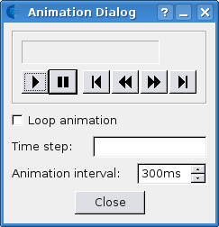

Dialogs
In this section the various Aguila dialogs are described.
Animation Dialog
If you loaded a temporal attribute, than you can start an animation by selecting the Animate menu item from the View menu, or by pressing the Animate toolbutton from the toolbar. A dialog will be shown from which you can control the animation. This will trigger an update of all views that show temporal attributes.

Draw Properties Dialog
What properties are show in the properties dialog depends on the attribute type, not all properties are applicable for all types of data.
- Palette
- The colours used in the view
- Exact legend borders
- Should the minimum and maximum value of the legend, exactly match the data minimum and maximum. The values are rounded otherwise
- Number of colours
- Numbers of colours sampled from the colour palette.
- Maximum cutoff
- This value will set the upper range used in the colour assignment. Data values above this value are drawn using the same colour as the one used for the maximum cutoff value. Reset will set this back to the default case of the data maximum.
- Minimum cutoff
- This value will set the lower range used in the colour assignment. Data values below this value are drawn using the same colour as the one used for the mimimum cutoff value. Reset will set this back to the default case of the data minimum.
- Colour assignment
- Mode of how colours are assigned by dividing the data range in Number of colours intervals. The per colour interval size can be fixed (linear) or increasing from small to large (logarithmic).
- Draw mode
- Fill
- Show values as solid filled pixels.
- Contour
- Draw as contours.
For an uncertain attribute, the folowing options are also available:
- Colour assignment
- If a value is selected in the probability graph, an additional colour assignment mode is available: Confidence interval.
- Confidence level (1 - alpha)
- If the Confidence interval colour assignment mode is selected, this option can be used to configure the confidence level.
- Exceedance probabilities
- When this option is selected, exceedance probabilities will be shown, instead of cumulative probabilities.